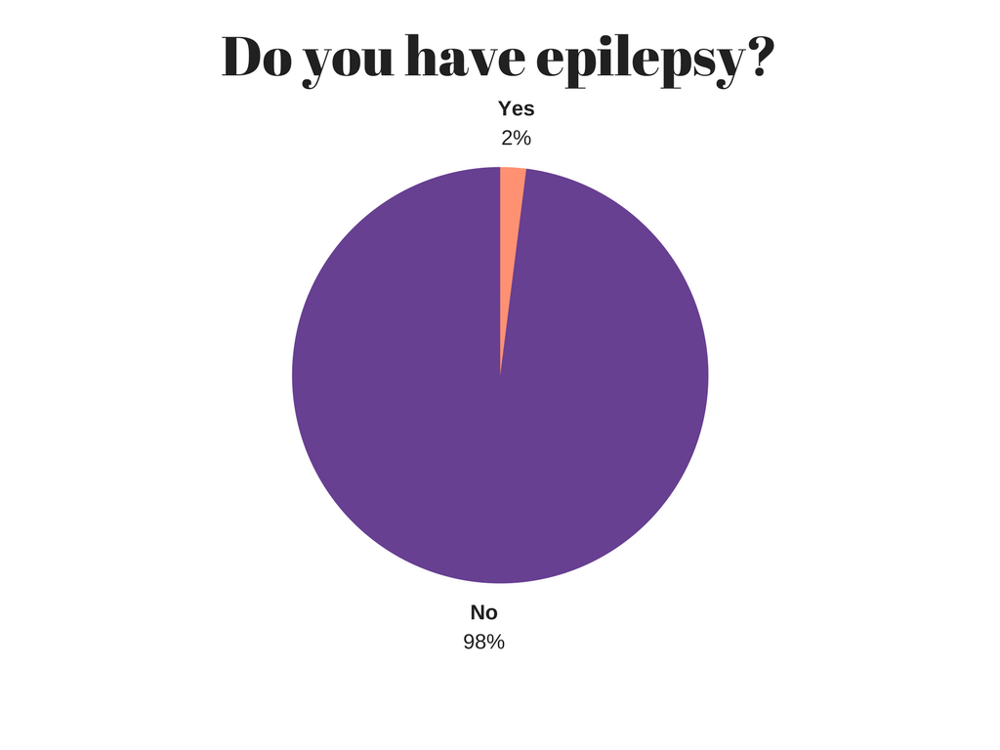
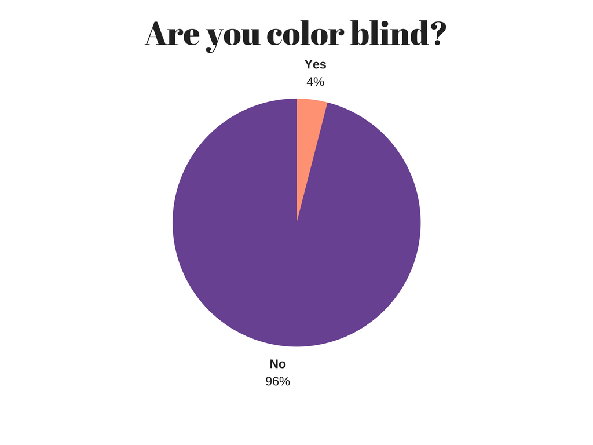

The Problem
In todays society, we have the internet. We use it for entertainment, education, communication and many other things. It generally makes our life much easier. However, there are those who can not make the most out of this technology. Among those are epileptics and colorblind people. Everytime an epileptic opens a website, there is a risk of that person getting a seizure. Those with colorblindness can have a hard time differentiating between colors. It can have a negative impact on the experience of those individuals that this problem applies to. Another problem that we will take into consideration is websites where there is low contrast between different elemements, which can for instance make it hard to read the text.
Our Research
Our group has conducted a survey consisted of six questions. The survey was carried out in late November and early December 2017 among 108 different and random people of various age groups. It was stated beforehand that the survey was for educational purposes only. The most important point of the survey was to receive adequate information about people with visual impairement (or other deficiencies). The second most important point of the survey was to see if the candidates were willing to use an add-on that made website more readable and safe.
The First Problem - Impaired Vision
Many people have some type of vision impairment. Myopia and hyperopia, for instance, have a combined frequency of about 30% of the world population, and those are only two conditions, there are many more. Old folks already have a hard time understanding the fairly new technology, that is the internet. Most people will have their vision affected as they age, and as time goes, we will depend more on the internet. We do not want vision impairment to be a problem in this kind of a future.
The Second Problem - Epilepsy
Epilepsy is one of the most common neurological diseases, and it can cause epileptic seizures. About 0.8% of Norway’s population suffers from epilepsy, that is approximately 45000 people.
People experience epilepsy differently. Some can live normally throughout their whole life without the disease bothering them, whereas for others it can be a big problem. Epileptics are not the only ones at risk of having seizures, everyone can have epileptic seizures under the right circumstances. Epileptics have a lower threshold for seizures, which is why they have more of them.
Some people are born with epilepsy; however inheritance is not the biggest cause. Disturbance in the development of a fetus’ brain is the biggest cause of infants born with epilepsy. Epilepsy at old age is often caused by traumas, tumors and damage to the head.
As mentioned, epileptics can have epileptic seizures. There are several types of these seizures. They are often divided into two groups: partial, where only a few small parts of the brain are involved, and generalized seizures, where a major part of the brain is involved. These again are divided into subgroups. A generalized seizure could be the patient suddenly losing consciousness, followed by twitching arms and legs, and maybe foaming at the mouth. A partial seizure could be the patient having only a twitching arm or a leg without losing consciousness.
Some common seizure triggering factors are lack of sleep, alcohol, mental stress and flickering bright light. The latter can be problematic for patients that spend time on the internet. Playing videogames, watching movies or even switching tabs could trigger a seizure.
In the survey that we conducted, we asked the question "Do you have epilepsy?", where approximately 2% answered yes. On a worldwide basis, that 2% corresponds to over 150 million people.
The Third Problem - Color Blindness
Color blindness, more accurately referred to as color vision deficiency, involves a decreased ability to see or distinguish different colors. Approximately 8% of all men, and less than 1% of all women is colorblind.
There are a lot of different types of color blindness. They can be divided into three mains groups: color-weakness, color blindness and total color blindness which is very rare. Color-weakness and color blindness are the result of a partial or complete lack of ability to see one of the three primary colors red, green and blue. In cases of total color blindness, the person only perceives different shades of grey.
More than 99% of everyone that is colorblind suffer from red-green color blindness. Red-green color blindness is a generic term for all cases of color blindness which involves the inability or decreased ability to see either red or green. All types of color blindness affects the whole spectrum of colors to a certain degree. Even thought red-green color blindness involves different types of color blindness the result is similar; It becomes difficult to distinguish red, green and colors consisting of red and green.
The two pictures below illustrates how red-green color blindness may affect how colors on images and elements are percieved
Original image
Red-green color blindness simulated
As you can see from the pictures above, people that are red-green colorblind can experience problems when they visit web pages where red and green hues are present. It may be difficult to distinguish between different elements on the page. For example, text, pictures and illustrations which consists of different red and green colors. It can also be difficult to determine if a color is red, green yellow, orange etc.
We also asked the question "Are you color blind?" in the survey that we conducted:
As you can see, 4% answered yes. 4% on a wolrdwide basis corresponds to over 300 million people.